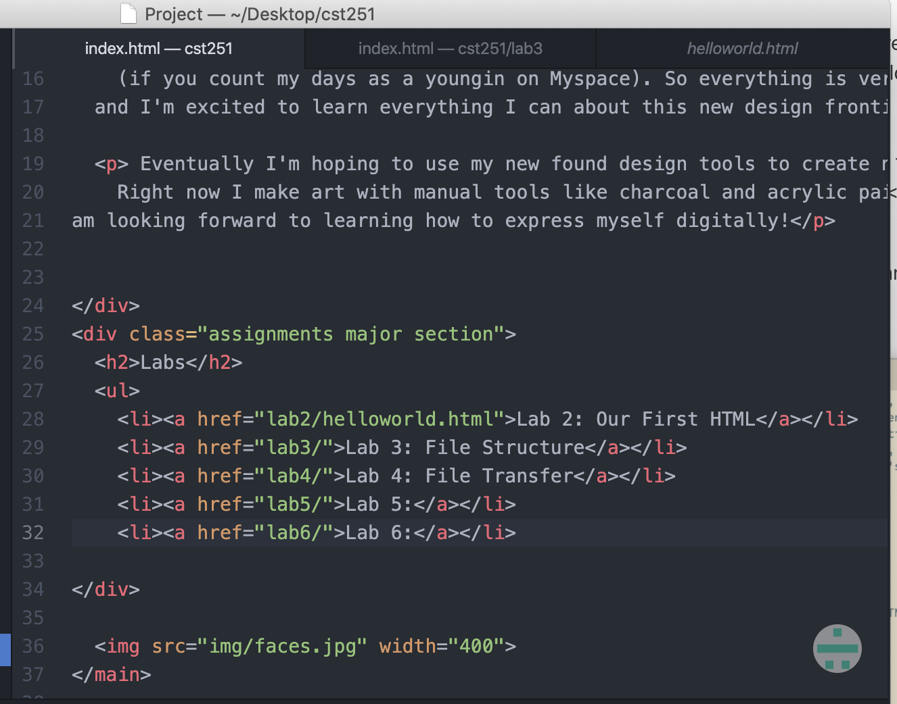
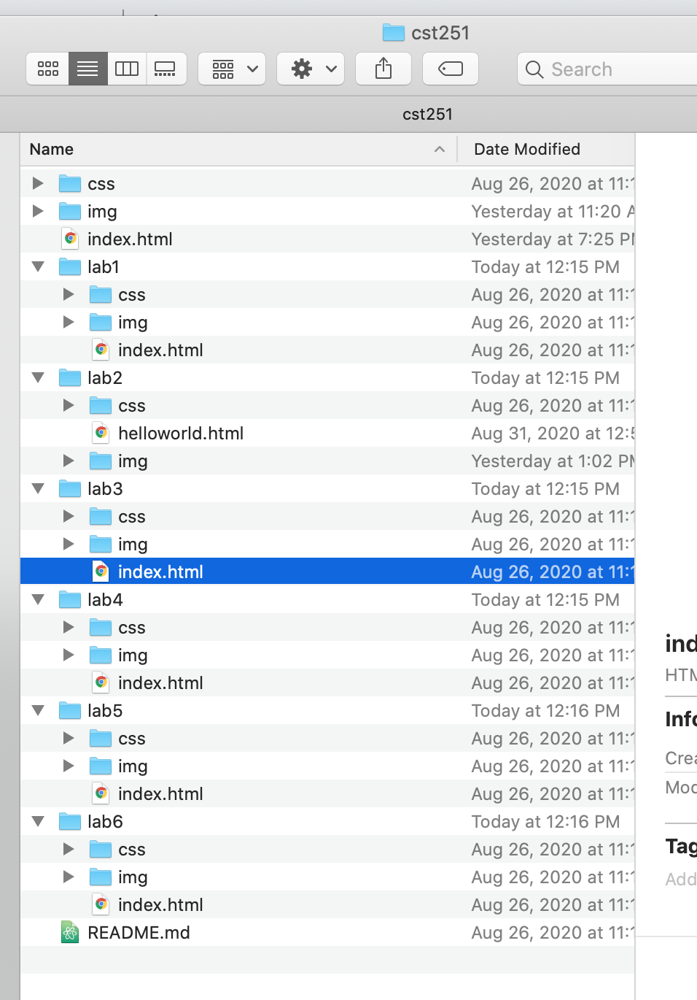
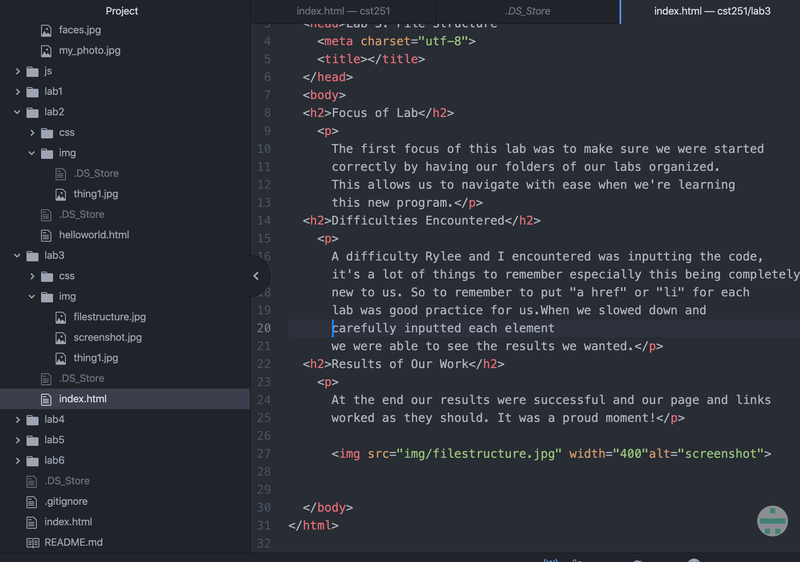

The first focus of this lab was to make sure we were started correctly by having our folders of our labs organized. This allows us to navigate with ease when we're learning this new program.
A difficulty Rylee and I encountered was inputting the code, it's a lot of things to remember especially this being completely new to us. So to remember to put "a href" or "li" for each lab was good practice for us.When we slowed down and carefully inputted each element we were able to see the results we wanted.
At the end our results were successful and our page and links worked as they should. It was a proud moment!

screenshot of links being added to index

screenshot of organization of files on computer

screenshot of html of new page for lab 3!